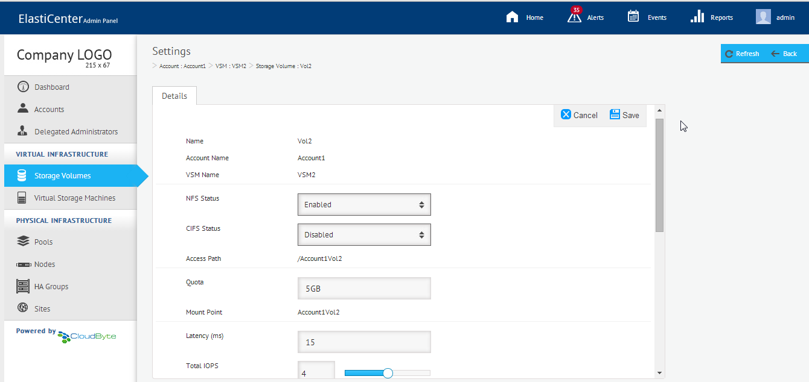
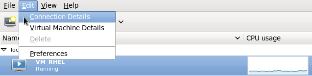
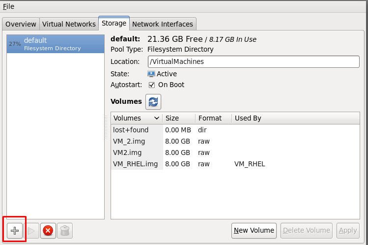
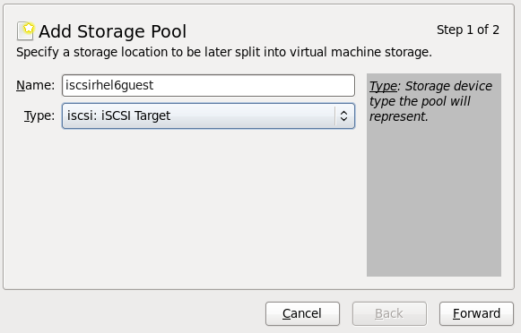
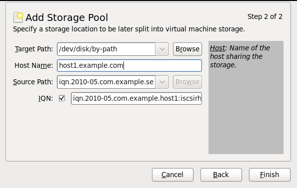

Mapping iSCSI LUN
Note: Do not present the same LUN to multiple clients/initiators until an OS Clustering (for example, Red Hat Cluster Suite (RHCS) or Microsoft Cluster Server (MSCS)) uses the shared LUN.
On Linux
The following procedures might work on most of the Linux setups. However the certified versions are
- OpenSUSE-11.4-x86 -64 bit and 12.1 version
- Red Hat Enterprise Linux Server release 6.0
- CentOS-6.4-x86
Without CHAP authentication
- At command prompt, run the following command, to discover the iSCSI target:
iscsiadm -m discovery -t st -p <VSM_IP_address:port>. -
Connect to the target in either of the following ways:
- To connect to all targets, run the following command:
iscsiadm –m node –l - To connect to an individual target, run the command as shown in the sample command:
iscsiadm –m node –T <target_name_displayed_when_you_run_discover_command> –p <VSM_IP_address:port> –l
- To connect to all targets, run the following command:
The iSCSI target (iqn) is displayed as shown in the following example: 10.10.8.201:3260,1 iqn.2012-09.CertStorage:isci-on-iscsiSet
-
To create multiple partitions from the LUN, run the following command:
fdisk -l. -
Use the following command to create the partition:
fdisk <disk(Discovered LUN)> -
(Optional) Enter the command
mto list the commandline help. -
Create a partition using the command
n(primary or extended). - Specify the cylinder size and value.
-
Specify the size of the partitions and enter
wfor WRITE changes. -
Create a file system on the created partitions using the following command:
mkfs.<ext2,ext3,ext4,ntfs,vfat> <partition> -
Create an empty directory using the following command:
mkdir <directoryname> -
Mount the partitions to the empty directory using the following command:
mount <partition name> <directoryname> - Perform READ and WRITE operations on mount point.
A success message is displayed.
All available disks and partitions are listed.
Sample CLI snapshot
<codedoc code>[root@qaprod ~]# iscsiadm -m discovery -t sendtargets -p 10.10.8.201
10.10.8.201:3260,1 iqn.2012-09.CertStorage:isci-on-iscsiSet
[root@qaprod ~]# iscsiadm -m node -T
iqn.2012-09.CertStorage:isci-
on-iscsiSet --portal 10.10.8.201:3260 --login
Logging in to [iface: default, target: iqn.2012-09.CertStorage:isci-
on-iscsiSet,
portal: 10.10.8.201,3260]
Login to [iface: default, target: iqn.2012-09.CertStorage:isci-on-iscsiSet,
portal: 10.10.8.201,3260] successful.
[root@qaprod ~]# fdisk -l
Disk /dev/sda: 500.1 GB, 500107862016 bytes
255 heads, 63 sectors/track, 60801 cylinders
Units = cylinders of 16065 * 512 = 8225280 bytes
Sector size (logical/physical): 512 bytes / 512 bytes
I/O size (minimum/optimal): 512 bytes / 512 bytes
Disk identifier: 0x00018542
Device Boot Start End Blocks Id System
/dev/sda1 * 1 64 512000 83 Linux
Partition 1 does not end on cylinder boundary.
/dev/sda2 64 60802 487873536 8e Linux LVM
Disk /dev/dm-0: 53.7 GB, 53687091200 bytes
255 heads, 63 sectors/track, 6527 cylinders
Units = cylinders of 16065 * 512 = 8225280 bytes
Sector size (logical/physical): 512 bytes / 512 bytes
I/O size (minimum/optimal): 512 bytes / 512 bytes
Disk identifier: 0x00000000
Disk /dev/dm-0 doesn't contain a valid partition table
Disk /dev/dm-1: 10.3 GB, 10284433408 bytes
255 heads, 63 sectors/track, 1250 cylinders
Units = cylinders of 16065 * 512 = 8225280 bytes
Sector size (logical/physical): 512 bytes / 512 bytes
I/O size (minimum/optimal): 512 bytes / 512 bytes
Disk identifier: 0x00000000
Disk /dev/dm-1 doesn't contain a valid partition table
Disk /dev/dm-2: 435.6 GB, 435607830528 bytes
255 heads, 63 sectors/track, 52959 cylinders
Units = cylinders of 16065 * 512 = 8225280 bytes
Sector size (logical/physical): 512 bytes / 512 bytes
I/O size (minimum/optimal): 512 bytes / 512 bytes
Disk identifier: 0x00000000
Disk /dev/dm-2 doesn't contain a valid partition table
Disk /dev/sdb: 1073 MB, 1073741824 bytes
255 heads, 63 sectors/track, 130 cylinders
Units = cylinders of 16065 * 512 = 8225280 bytes
Sector size (logical/physical): 512 bytes / 512 bytes
I/O size (minimum/optimal): 4096 bytes / 1048576 bytes
Disk identifier: 0x4408a443
Device Boot Start End Blocks Id System
/dev/sdb1 1 131 1045504 7 HPFS/NTFS
Partition 1 has different physical/logical endings:
phys=(129, 254, 63) logical=(130, 42, 40)
[root@qaprod ~]# fdisk /dev/sdb1
WARNING: DOS-compatible mode is deprecated. It's strongly recommended to
switch off the mode (command 'c') and change display units to
sectors (command 'u').
Command (m for help): m
Command action
a toggle a bootable flag
b edit bsd disklabel
c toggle the dos compatibility flag
d delete a partition
l list known partition types
m print this menu
n add a new partition
o create a new empty DOS partition table
p print the partition table
q quit without saving changes
s create a new empty Sun disklabel
t change a partition's system id
u change display/entry units
v verify the partition table
w write table to disk and exit
x extra functionality (experts only)
Command (m for help): n
Command action
e extended
p primary partition (1-4)
p
Selected partition 1
First cylinder (1-1008, default 1):
Using default value 1
Last cylinder, +cylinders or +size{K,M,G} (1-1008, default 1008):Using default value 1008
Command (m for help): w
The partition table has been altered!
Calling ioctl() to re-read partition table.
</codedoc>
With CHAP authentication
For all targets
- Open /etc/iscsi/iscsid.conf using an editor and then specify the details for the following section:
<codedoc code node.session.auth.authmethod = CHAP
node.session.auth.username = <CHAP username>
node.session.auth.password = <CHAP secret>
node.session.auth.username_in= <Mutual CHAP username> (give only when you are doing mutual CHAP)
node.session.auth.password_in = <Mutual CHAP secret> (give only when you are doing mutual CHAP)
discovery.sendtargets.auth.authmethod = CHAP
discovery.sendtargets.auth.username = <CHAP username>
discovery.sendtargets.auth.password = <CHAP secret>
discovery.sendtargets.auth.username = <Mutual CHAP username> (give only when you are doing mutual CHAP)
discovery.sendtargets.auth.password_in = <Mutual CHAP secret> (give only when you are doing mutual CHAP)
</codedoc>
- Restart the iSCSI daemon using the following command:
/etc/init.d/iscsi restart. - Follow the procedures in the section
For as specific target
Specify the details as follows at command prompt:
iscsiadm -m node -T "<Target_Name>" -p <VSM_IP_address>:<port> --
op=update --name node.session.auth.authmethod --value=CHAP
iscsiadm -m node -T "< Target_Name >“ -p < VSM_IP_address >:<port> --
op=update --name node.session.auth.username --value=<CHAP_username>
iscsiadm -m node -T "< Target_Name >“ -p < VSM_IP_address >:<port> --op=update
--name node.session.auth.password --value=<password>
iscsiadm -m node –T "<Target_ Name>" -p < VSM_IP_address >:<port> -l
Resizing iSCSI LUN
The following sections explain how to expand your iSCSI storage volume on CentOS:
Exporting the iSCSI LUN (On CentOS Console)
In the CentOS console, run the commands provided in the table in sequence to export the iSCSI LUN:
| Step | Task | Command | Example | Details |
| 1 | Discover the iSCSI targets. | iscsiadm -m discovery -t st -p <Target IP Address>
|
iscsiadm -m discovery -t st -p 11.11.11.11
|
Outputs the complete target name. |
| 2 | Log in to the iSCSI target. | iscsiadm -m node -T <Complete Target Name> -l | iscsiadm -m node -T iqn.2014-02.FCAcc.Test:FCAcciscsivol1 -l |
|
| 3 | Display the current partitions on the hard disk. | fdisk –l
|
The partition is displayed in the output. | |
| 4 | Create a file system on the hard disk drive. | mkfs.ext3 <Partition name> | mkfs.ext3 /dev/sdc | At prompt, confirm by typing y as shown in the following example: /dev/sdc is entire device, not just one partition! Proceed anyway? (y,n) y |
| 5 | Create a directory. | mkdir <Directory name> | mkdir /mnt/cbdata | |
| 6 | Mount the partition into your directory. | mount <Partition name> <Directory name> | mount /dev/sdc /mnt/cbdata -o sync | |
| 7 | (Optional) Retrieve the current size of the mounted LUN. | df –kh | ||
| 8 | Copy some data to the directory /mnt/cbdata. | cp | ||
| 9 | Unmount directory from the disk. | umount <Directory name> | umount /mnt/cbdata | |
| 10 | Log out of iSCSI target. | iscsiadm -m node -u -T <Complete target name> -p <Target IP Address> | iscsiadm -m node -u -T iqn.2014-02.Acc1.TSM3:TSM3TSM3ISCSI11 -p 11.11.11.11 |
Editing Quota Size (in ElastiCenter)
- In the ElastiCenter, select Storage Volumes.
- In the Storage Volumes page, click Settings > Edit.
- Increase the Quota size of the LUN and then click Save.

LUN expansion and resizing file system (on CentOS Console)
In the CentOS console, run the commands provided in the table in sequence to expand the LUN and resize the file system:
| Step | Task | Command | Example | Details |
| 1 | Log in to iSCSI target. | iscsiadm -m node -T <Complete target name> -p <Target IP Address> –l
|
iscsiadm -m node -T iqn.2014-02.Acc1.TSM3:TSM3TSM3ISCSI11 -p 16.10.10.3 –l
|
|
| 2 | Display current partitions on the hard disk. | fdisk –l | Check the output to see if the disk size has increased. | |
| 3 | Mount the partition into the directory. | mount partition name <Directory name> -o sync | mount /dev/sdb /mnt/cbdata/ -o sync | |
| 4 | Resize the expanded volume. | resize2fs /dev/sdb/ total space of volume | resize2fs /dev/sdb/ 5G | In this example, 5G is the total space on the resized Volume. |
| 5 | Retrieve the current size of the resized LUN. | df –kh |
On Windows Server 2008
Discovering the iSCSI target
Note: The mapping procedures are similar for other versions of Windows Server. However, there might be minor variations owing to the differences in UI strings and navigation.
- Ensure that you have enabled iSCSI. For details, see
- On Windows Server 2008, launch iSCSI Initiator (Programs > Administrative Tools > ISCSI Initiator).
- In the Target tab, specify the target (tenant IP address).

- Click Quick Connect. The Quick Connect screen appears, displaying the target name.
- Click Done.
Create storage drive to use the iSCSI target
- Launch Server Manager and then select Disk Management in the left pane.

- Right-click the unallocated space (the highlighted section) and then select Initialize Disk. The Initialize Disk dialog box appears.

- Click OK.
- Right-click in the space and then select New Simple Volume as shown in the following screen:

- The New Simple Volume wizard appears.
- Follow the instructions to complete the wizard, to create the partition.
- Ensure that the created disk is added to the Disk management console.
On Kernel-based Virtual Machine
Note:The following section provides procedures performed on RHEL 6.3. The procedures might be similar on other flavors of Linux.
- On your Linux desktop, select Applications > System Tools > Virtual Machine Manager.
- Select a host machine.
- Click Edit > Connection Details.
- Click Storage tab.
- Click the Add Storage Pool + icon at the bottom left side of the dialog box. The Add a New Storage Pool wizard appears.
- Specify a name for the Pool, select iSCSI as the type, and then click Forward.
- In the following screen, specify the required details.
- Click Finish.




| Field | Description |
| Target Path | Path of the target directory (to use for the Storage Pool). |
| Host Name | Host name or IP address of the iSCSI target. |
| Source Path | iSCSI target IQN. |
| IQN | Select the check box and then enter the IQN for the initiator. |